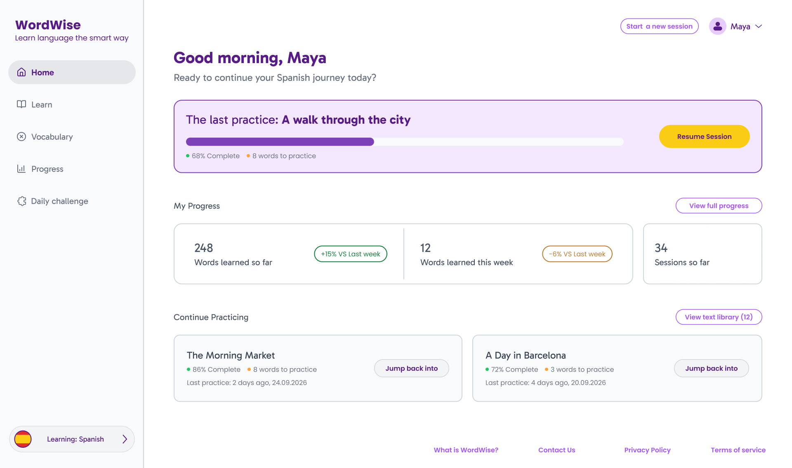
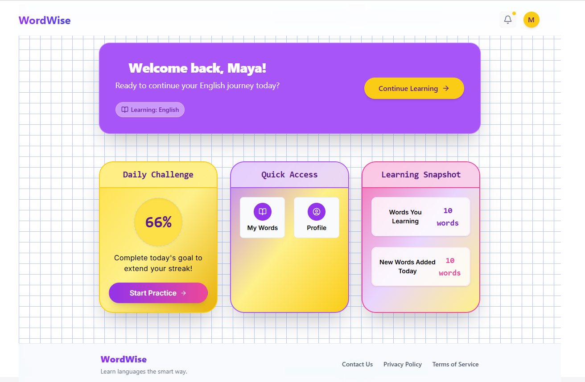
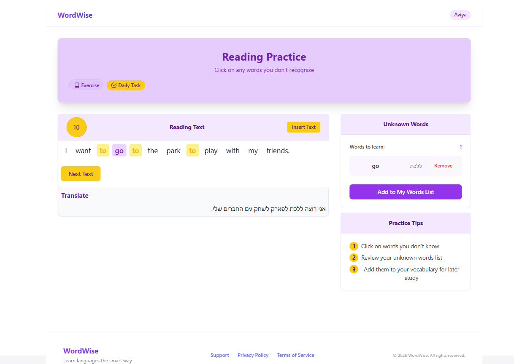
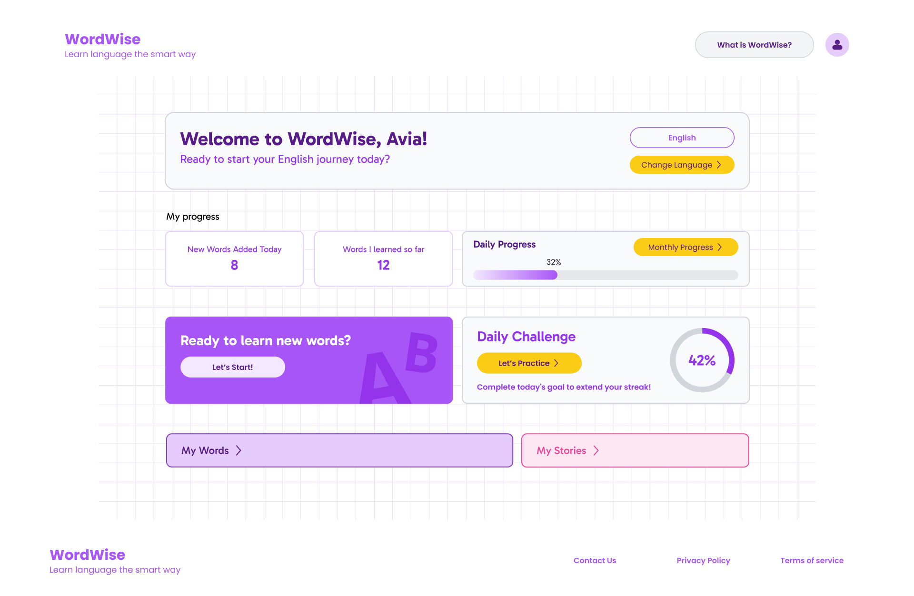
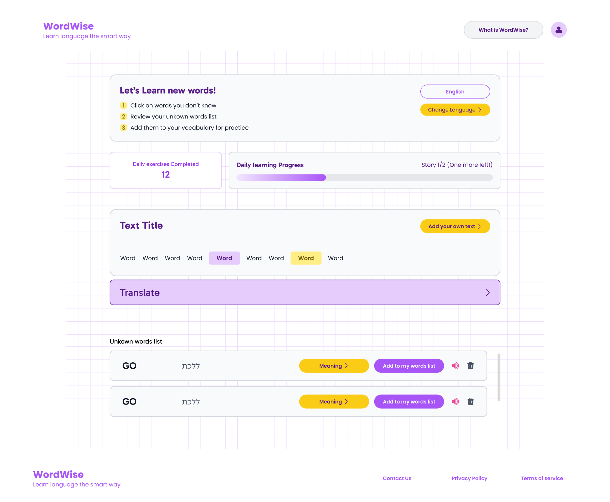
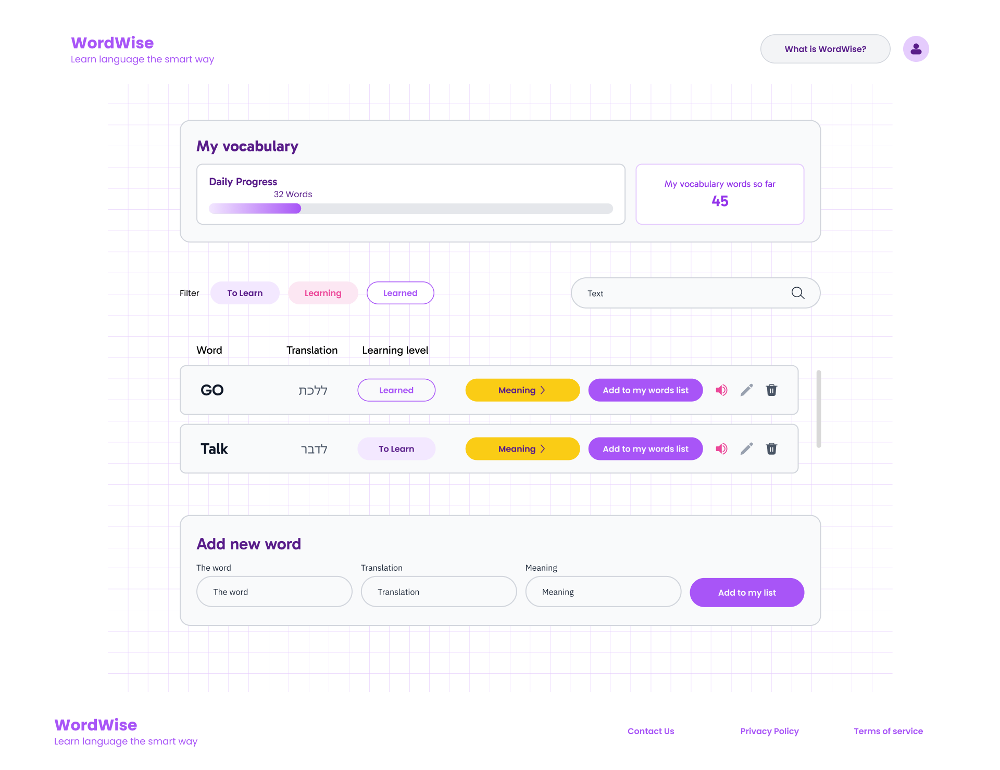
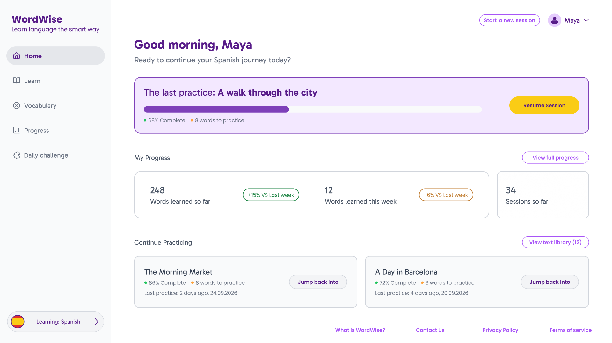
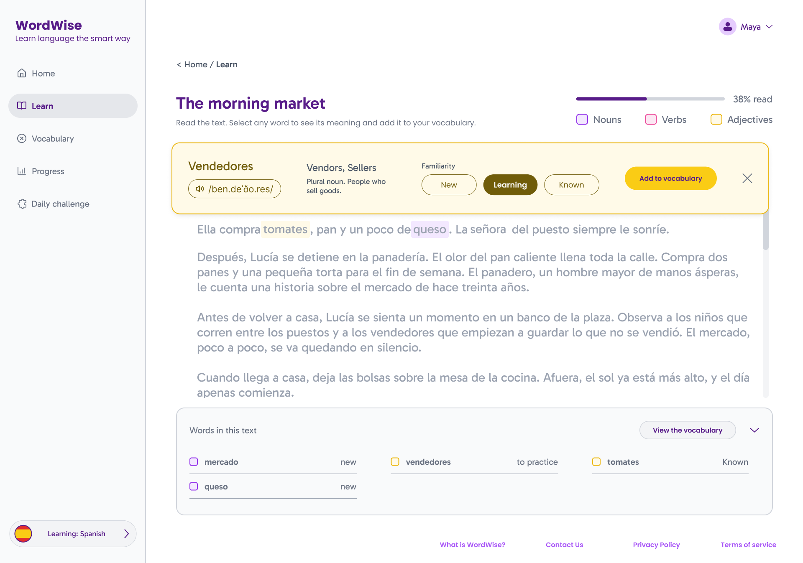
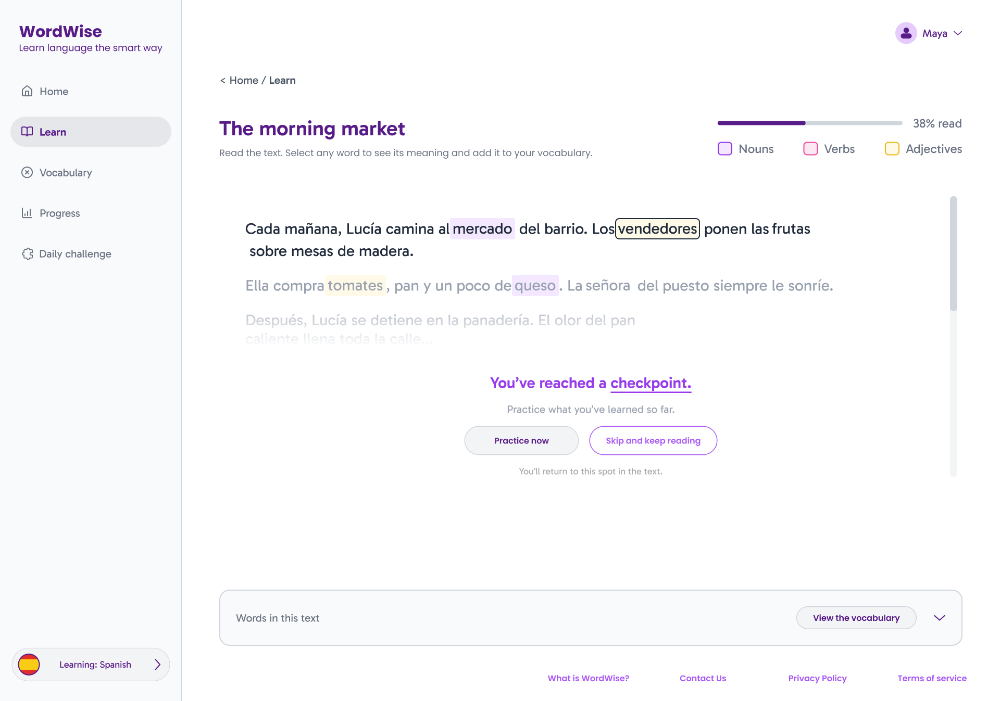
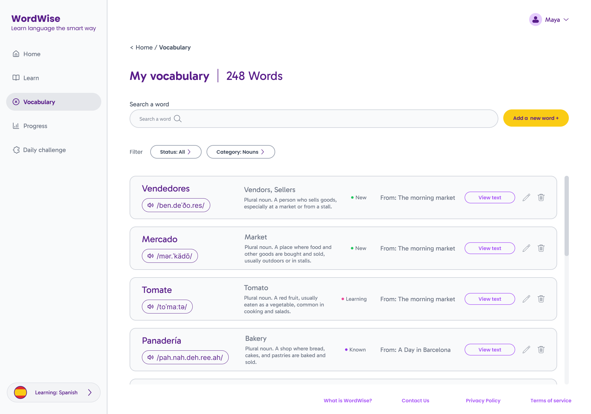

How do you fix a learning loop that's losing its learners?
Redesigning a language learning platform to create a clearer, more intuitive experience for learning, reviewing and progressing.

Project Overview
WordWise is a language learning platform focused on vocabulary acquisition through smart repetition.
The project involved redesigning its existing experience to make learning and reviewing words clearer and easier to navigate.
- My Role
- Product Designer
- Timeline
- August - October 2025
- September 2026 - Redesign
- Project Type
- UI, Real world Project
The challenge
WordWise had the right core concept, but the experience made it difficult for users to know where to start.
The original product was built around learning vocabulary through repeated practice, but its interface lacked a clear structure and hierarchy. Some elements were difficult to understand, and the next step in the learning process was not always obvious. Initial usability tests conducted by the creator revealed that users were frequently unsure where to begin or how to navigate the experience.
The core challenge was to rethink the existing experience and establish a clearer, more intuitive interface while keeping the core learning methodology intact.
Understanding the product
Before redesigning the experience, I collaborated with the software engineer to understand how WordWise works, who it is designed for, and what structural support the learning experience requires. WordWise is built around smart repetition - learners flag words they don't know and revisit them systematically over time, rather than relying on rote memorization alone.
Together, we audited the existing interface, reviewing main screens and evaluating unclear elements, interactions, and flows. This surfaced key areas where the product's structure and purpose were obscured:

No personalization New and returning learners see the exact same interface.
Unclear feature purpose Certain elements fail to communicate their function.
Lack of navigation Users have no straightforward way to return to the previous screen.
Visual overload A heavy color palette makes it difficult for learners to focus.
Unclear hierarchy Important information and primary actions compete for attention.
Together, we defined the target audience: a broad demographic ranging from ages 10 to 99, with a unified focus on making vocabulary practice more accessible.
Given the project's scope, this definition relied on input from the product's creator rather than direct user research - a constraint that shaped how broadly the design needed to generalize, rather than allowing for narrower, persona-specific decisions.
Competitive Research
To analyze how other language learning products structure their experiences, I conducted a competitive audit across five platforms: Duolingo, Drops, Memrise, Qlango, and Babbel. The research focused on six key pillars: learning flow, vocabulary practice, repetition, progress tracking, personalization, and motivation.
To expand my initial feature-based research, I used AI as a research assistant. I first defined core investigative questions, then used Gemini to gather and organize platform data. I brought these findings into my design synthesis and used ChatGPT to cross reference results and identify recurring industry patterns.
What I found?
-
Learning follows a structured path
Platforms guide users sequentially through new content.
-
Review is Embedded in the Loop
Previously acquired content is systematically reintroduced through regular repetition.
-
Progress is made visible
Learners can easily track completed modules, current standing, and overall progressing.
-
Practice Utilizes Multi Modal Interactions
Retention is supported by combining listening, writing, matching, multiple choice questions, and short interactive exercises.
Defining the opportunity
While the existing experience gave learners access to various features, it failed to connect them into a cohesive learning journey.
The existing navigation structure
Synthesizing insights from the existing WordWise product and competitive benchmarks, highlighted clear opportunities for structural impact:
-
Establish a Clearer Hierarchy
Help learners instantly understand what matters right now, what actions are available, and what can wait.
-
Surface Continuous Progress
Provide persistent feedback on current placement and upcoming milestones.
-
Build a Connected Learning Flow
Unify practice, vocabulary acquisition, and review into a single continuous loop rather than treating them as separate interactions.
The goal wasn't to replicate features from competing apps, but to adapt proven structural patterns to resolve existing friction points in WordWise.
Revisiting the experience
With these opportunities defined, I audited the original WordWise interface to restructure the layout and plan how interventions would integrate into the product ecosystem.
The Legacy experience (Pre redesign)

What didn’t work
Unclear hierarchy
Critical sections and actions shared identical visual weight.
Unclear interactions
Buttons and interactive elements failed to signal their utility.
Unclear learning flow
The interface offered zero orientation regarding current user location or next steps.
First redesign Iteration
Reorganizing the interface, introducing new functional modules, and establishing a more structured visual system.



What improved
Restructured content hierarchy.
Introduced dedicated learning and review components.
What still wasn't solved
Unresolved Hierarchy
Primary and secondary actions still lacked sufficient visual differentiation.
Similar progress indicators
Different progress metrics relied on identical visual styling, causing user confusion.
Fragmented Flow
Transitions between regular practice, memory games, and new text modules weren't clearly communicated.
While the initial visual cleanup improved aesthetics, fundamental UX questions remained regarding how learners transition between learning, review, and progress tracking. To stress test these choices, I used Claude as an objective review tool to critique my architecture and uncover overlooked edge cases.
The new possible solution
By synthesizing together the competitive research, the legacy friction points in the original product, and the UX problems I identified in my initial iteration, I began mapping a cohesive new learning flow.
Rather than designing screens in isolation, I mapped out the end to end architecture, defining what happens before, during, and after each learning activity. I developed this flow iteratively, using ChatGPT as a thinking partner to explore different structures, ask UX questions, and optimize the transition from one state to the next.
From these explorations, I selected the structure that best preserved user orientation at each transition point, while discarding directions that added complexity without clear learning value.
The new learning flow
With the structural skeleton established, I used Claude and Figma Agents to explore diverse visual layouts for each screen, curating the strongest options as a baseline in Figma.
What changed in the flow
-
From isolated actions to a unified journey
Reading, vocabulary, practice, and review are seamlessly linked within a single learning experience.
-
From unclear transitions to contextual progress
Added checkpoints to help learners understand where they are in the text and why the experience is transitioning to the next activity.
-
From “what now?” to guided next steps
The experience guides learners through active practice, completion, and the next logical choice.
After I finished designing the full screens, I used Gemini to run iterative automated UX audits on hierarchy, visual clarity, and layout friction, refining the design across multiple review cycles.
Not every suggestion was adopted. Flagged issues were weighed against the product's actual learning flow before being applied.
The redesigned experience
For this case study, I focused the redesign on three core screens: Home, Practice, and Vocabulary, that best demonstrate the shift in structural thinking. Memory Game and Summary follow the same design logic but weren't rebuilt in full for this phase.

Personalized greeting New and returning learners now see different messaging: a welcome message for first time users, and a simple return greeting for those already in the system.
Clear next step “Resume session" establishes a singular, prominent starting point rather than forcing users to parse competing actions.
Progress at a glance Core learning metrics surface high-level status without cluttering the home page into an overwhelming dashboard.
Clear way back A persistent side menu and breadcrumb trail now give learners a straightforward way to navigate backward.
Return to unfinished learning "Continue Practicing" intelligently highlights texts that still contain unreviewed words, bridging past sessions with current engagement.
Completed texts remain securely archived in the library without competing for attention.

Learn without leaving the text Selecting any word inline instantly surfaces its definition, pronunciation, and familiarity status, along with a quick way to add it to the personal dictionary - so learners can explore unfamiliar vocabulary without breaking their reading momentum.
Connected learning loop Words encountered in the text remain visible as part of the learning context, connecting the reading experience to the learner's vocabulary.

Strategic checkpoints Checkpoints connect reading with practice, letting learners choose when to reinforce newly encountered vocabulary.

Find and filter Search and filters make it easier to navigate a growing vocabulary and focus on specific word groups.
Understand each word Each saved term maintains its contextual definition, pronunciation, and mastery status in one organized view.
Return to context Words stay persistently linked to their original source text, allowing learners to jump back into context whenever needed.
Together, these changes also addressed two gaps from the original audit: every interactive element now communicates its purpose through clear labeling, and the simplified color system reduces the visual load that made the original interface feel overwhelming.
Reflection
Reworking WordWise gave me the opportunity to look at my own design from a different perspective.
-
Question my own work
It can be difficult to notice problems in something you have just designed. Revisiting my first redesign helped me step back from decisions I had already made and recognize UX issues I hadn't seen the first time around.
-
Think beyond individual screens
Working on the new flow made me think less about how each screen should look and more about how the screens, actions, and states connect. The experience started to feel less like a collection of screens and more like one connected system.
-
Use AI to challenge my thinking
Working with AI showed me that its value isn't only in generating visual options.
I used it to question decisions, explore different directions, and review the work from another perspective. I learned to treat its suggestions as input rather than absolute answers - the final design decisions still needed to come from me and make sense for the product.